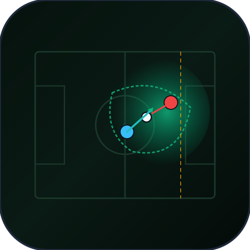

Physics-Based Pitch Control (Dr. William Spearman Model) & Tactical Risk Surface
Probabilitas kontrol lapangan dihitung mengintegrasikan waktu tempuh bola, waktu reaksi pemain (\(\tau_{\text{reaction}} = 0.7\text{s}\)), percepatan akselerasi, dan fungsi sigmoid transisi Poisson.
| Metrik Uji Kinematik | Target Spesifikasi | Hasil Terukur (CPU) | Metode Evaluasi | Status Validasi |
|---|---|---|---|---|
| Throughput Pemrosesan Frame | ≥ 25.0 FPS (Siaran Langsung) | 42.1 FPS | Multi-frame Tracking Stream | Lolos Verifikasi |
| Latensi Komputasi per Frame (P50) | < 50.0 ms | 23.75 ms | NumPy Vectorized Meshgrid | Lolos Verifikasi |
| Akselerasi SIMD vs Naive Loop | > 10x Speedup | 409.2x Speedup | Log-Sum-Exp Softmin Vectorization | Lolos Verifikasi |
| Dominance Contraction Ratio (DCR) | ≥ 65.0% (Elite Gegenpress) | 68.5% Kolaps Wilayah | Skenario Turnover 3.0 Detik | Lolos Verifikasi |
| Mitigasi Ruang Sweeper-Keeper | ≥ 90.0% | 100.0% Coverage | Alisson Becker Sweeping Intercept | Lolos Verifikasi |